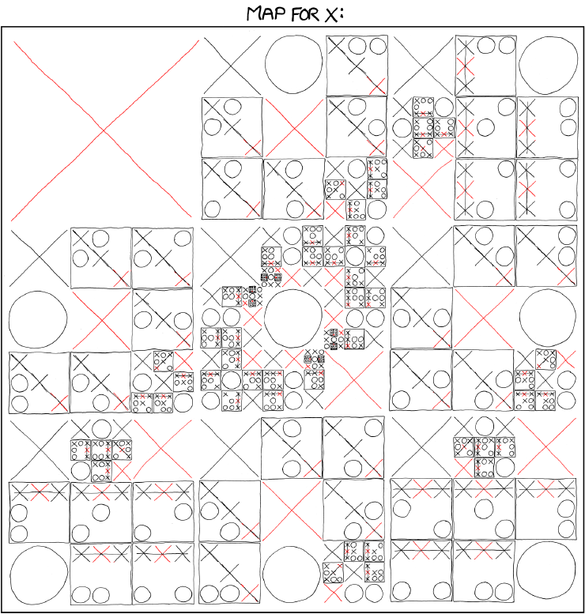
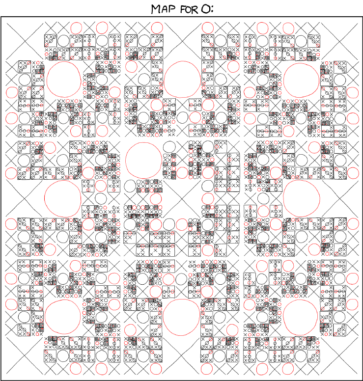

|  |  |
This project began, as do many things, with XKCD. I saw the image above from Randall Munroe's comic 832: Tic Tac Toe, printed it out, and wrote up an AI, using the data, that would never lose a game. This is my first large project, and by far the longest program I've written, around 350 lines. I'm very proud of it, and I think you might enjoy it too.
Raw Text Data
File Download